CODING AGENTS AS PIXEL WORLD MODELS
traex/DeepSeek-V4.1-Flash · 0028
尚未保存可播放视频
Static locked-off single-shot with fixed frame throughout filmed with constant framerate in real-time. The scene shows a realistic scientific demonstration. The scene only contains the described setup and actions. A light-colored coffee table with two tennis balls, one orange and one brown, placed near the center, back to back. A black pipe sits on the table on the left side and points towards the two tennis balls. The grey tennis ball rolls straight out of a black pipe from the left and hits the brown tennis ball.
failed逐轮保存的候选
回放视频、检查图与代码变化。
每份候选均可单独播放。实际图片检查记录在下方工具轨迹中。
可观测工具轨迹
实际执行的命令与返回图片。
命令 1exit 0
/bin/bash -c "pwd && rg --files -g '"'!*__pycache__*'"'"
命令 2exit 0
/bin/bash -c 'cat prompt.txt'
命令 3exit 0
/bin/bash -c 'cat GENERATION_RULES.md'
命令 4exit 0
/bin/bash -c "ls -la && find . -maxdepth 2 -type f -printf '%p %s bytes\\n' | sort"
命令 5exit 0
/bin/bash -c "sed -n '1,240p' artifact_io.py"
命令 6exit 0
/bin/bash -c "sed -n '1,260p' player_template.html"
命令 7exit 127
/bin/bash -c "file first_frame.png && python - <<'PY'
from PIL import Image
im=Image.open('first_frame.png')
print(im.mode, im.size)
PY"命令 8exit 0
/bin/bash -c "python - <<'PY' import importlib.util for m in ['cv2','scipy','numpy','PIL','skimage','imageio','matplotlib']: print(m, bool(importlib.util.find_spec(m))) PY"
命令 9exit 0
/bin/bash -c "python - <<'PY'
from PIL import Image
import numpy as np
im=np.array(Image.open('first_frame.png'))
print(im.shape, im.dtype)
# inspect local patches stats and rows
for name,(x0,y0,x1,y1) in {'pipe':(0,35,30,75),'grey':(112,30,140,62),'pair':(158,28,205,62),'bg':(80,25,120,65)}.items():
p=im[y0:y1,x0:x1]
print(name, 'min/max',p.reshape(-1,3).min(0),p.reshape(-1,3).max(0),'mean',p.reshape(-1,3).mean(0))
PY"命令 10exit 0
/bin/bash -c "python - <<'PY'
from PIL import Image
im=Image.open('first_frame.png')
im.crop((0,25,220,90)).resize((880,260),Image.Resampling.NEAREST).save('.tmp/objects_zoom.png')
im.crop((100,25,210,70)).resize((880,360),Image.Resampling.NEAREST).save('.tmp/balls_zoom.png')
PY"命令 11exit 0
/bin/bash -c "python - <<'PY'
from PIL import Image
import numpy as np, cv2
im=np.array(Image.open('first_frame.png'))
mask=np.zeros(im.shape[:2],np.uint8)
# Balls and shadows, expanded for fringe
cv2.ellipse(mask,(122,46),(14,17),0,0,360,255,-1)
cv2.ellipse(mask,(173,46),(12,17),0,0,360,255,-1)
cv2.ellipse(mask,(186,47),(12,17),0,0,360,255,-1)
# broad shadow below
cv2.ellipse(mask,(123,55),(17,8),0,0,360,255,-1)
cv2.ellipse(mask,(181,57),(24,9),0,0,360,255,-1)
for method,name in [(cv2.INPAINT_TELEA,'telea'),(cv2.INPAINT_NS,'ns')]:
out=cv2.inpaint(im[:,:,::-1],mask,5,cv2.INPAINT_TELEA if method==cv2.INPAINT_TELEA else cv2.INPAINT_NS)[:,:,::-1]
Image.fromarray(out).save('.tmp/clean_'+name+'.png')
# horizontal row interpolation
out=im.copy().astype(np.float32)
for y in range(im.shape[0]):
xs=np.flatnonzero(mask[y])
if len(xs)==0: continue
# runs
runs=np.split(xs,np.flatnonzero(np.diff(xs)>1)+1)
for run in runs:
a,b=run[0],run[-1]
l=max(0,a-1); r=min(im.shape[1]-1,b+1)
if a>0 and b<im.shape[1]-1:
t=np.linspace(0,1,b-a+3)[1:-1,None]
out[y,a:b+1]=im[y,l]*(1-t)+im[y,r]*t
Image.fromarray(np.clip(out,0,255).astype(np.uint8)).save('.tmp/clean_rows.png')
Image.fromarray(mask).save('.tmp/mask.png')
PY"命令 12exit 0
/bin/bash -c "python - <<'PY'
from PIL import Image
import numpy as np, cv2
im=np.array(Image.open('first_frame.png'))
hsv=cv2.cvtColor(im,cv2.COLOR_RGB2HSV)
for name,(x,y) in {'gray_hi':(118,41),'gray_mid':(123,48),'brown_hi':(169,43),'brown_mid':(173,49),'brown_dark':(166,49),'orange_hi':(184,42),'orange_mid':(189,49),'orange_edge':(179,47),'orange_dark':(192,54)}.items():
print(name, 'rgb',im[y,x], 'hsv',hsv[y,x])
# print small pixel grid around brown/orange color class H S V
for y in range(38,56,2):
row=[]
for x in range(163,197,2):
h,s,v=hsv[y,x]
row.append(f'{h:02d}/{s:02d}/{v:02d}')
print(y,' '.join(row))
PY"命令 13exit 0
/bin/bash -c "python - <<'PY'
from PIL import Image
import numpy as np, cv2
im=np.array(Image.open('first_frame.png'))
for name,box,src in [
('gray',(106,24,141,69),(65,24,100,69)),
('pair',(156,24,203,71),(204,24,251,71)),
]:
x0,y0,x1,y1=box; sx0,sy0,sx1,sy1=src
dst=im.copy()
srcpatch=im[sy0:sy1,sx0:sx1]
# feather alpha in full image
a=np.zeros(im.shape[:2],np.float32)
pad=4
a[y0+pad:y1-pad,x0+pad:x1-pad]=1
a=cv2.GaussianBlur(a,(0,0),3)
roi=dst[y0:y1,x0:x1].astype(np.float32)
srcp=srcpatch.astype(np.float32)
aa=a[y0:y1,x0:x1,None]
dst[y0:y1,x0:x1]=(srcp*aa+roi*(1-aa)).astype(np.uint8)
Image.fromarray(dst).save('.tmp/clean_'+name+'.png')
PY"命令 14exit 0
/bin/bash -c "python - <<'PY'
from PIL import Image
import numpy as np
im=np.array(Image.open('first_frame.png'))
# nearest neighbor enlarged strip with x grid every 5px
crop=im[24:72,100:210]
out=Image.fromarray(crop).resize((1100,480),Image.Resampling.NEAREST)
from PIL import ImageDraw
d=ImageDraw.Draw(out)
for x in range(100,211,5):
xx=(x-100)*10
d.line((xx,0,xx,480),fill=(0,255,0),width=1)
d.text((xx+2,3),str(x),fill=(0,255,0))
for y in range(24,73,5):
yy=(y-24)*10
d.line((0,yy,1100,yy),fill=(255,0,0),width=1)
d.text((2,yy+2),str(y),fill=(255,0,0))
out.save('.tmp/grid.png')
PY"命令 15exit 0
/bin/bash -c "python - <<'PY'
from PIL import Image
import numpy as np
im=np.array(Image.open('first_frame.png')).astype(np.float32)
# local chroma excess / saturation mask by distance from table expected grayscale-ish
# Print segmentation extents using simple color dominance in crop
for cond,name in [((im[:,:,0]-im[:,:,1]>12),'red'), ((im[:,:,0]-im[:,:,2]>20),'orange'), ((im[:,:,2]-im[:,:,1]>8),'blue'), ((im.max(2)-im.min(2)>15),'chroma')]:
ys,xs=np.where(cond & (np.indices(cond.shape)[0]>20) & (np.indices(cond.shape)[0]<70))
print(name, (xs.min(),ys.min(),xs.max(),ys.max()),len(xs))
PY"命令 16exit 0
/bin/bash -c 'python .tmp/test_clean.py'
命令 17exit 0
/bin/bash -c "python - <<'PY'
from PIL import Image
im=Image.open('first_frame.png')
for name,box in [('g',(106,27,140,65)),('b',(157,28,187,64)),('o',(174,29,203,65))]:
im.crop(box).resize(((box[2]-box[0])*15,(box[3]-box[1])*15),Image.Resampling.NEAREST).save('.tmp/'+name+'.png')
PY"命令 18exit 0
/bin/bash -c "python - <<'PY'
import numpy as np
from PIL import Image
im=np.array(Image.open('first_frame.png'))
# region darkest non-pipe and its coords
for y in range(35,60):
xs=np.where(im[y,:,0]<45)[0]
xs=xs[(xs>90)&(xs<215)]
if len(xs): print(y, xs.min(),xs.max(), im[y,xs].min(0),im[y,xs].max(0))
PY"命令 19exit 0
/bin/bash -c "python - <<'PY'
import cv2, numpy as np
from PIL import Image
im=np.array(Image.open('first_frame.png'))
# create contact sheet with color segmentation for each ball
hsv=cv2.cvtColor(im,cv2.COLOR_RGB2HSV)
out=[]
for name, cond in [
('gray', (np.indices(im.shape[:2])[1]>103)&(np.indices(im.shape[:2])[1]<140)&(np.indices(im.shape[:2])[0]>27)&(np.indices(im.shape[:2])[0]<65)),
('brown',(np.indices(im.shape[:2])[1]>157)&(np.indices(im.shape[:2])[1]<182)&(np.indices(im.shape[:2])[0]>28)&(np.indices(im.shape[:2])[0]<62)),
('orange',(np.indices(im.shape[:2])[1]>174)&(np.indices(im.shape[:2])[1]<202)&(np.indices(im.shape[:2])[0]>28)&(np.indices(im.shape[:2])[0]<62)),
]:
canvas=np.zeros_like(im);canvas[cond]=im[cond]
out.append(canvas[25:68,100:210])
Image.fromarray(np.concatenate(out,0)).resize((880,1032),Image.Resampling.NEAREST).save('.tmp/segs.png')
PY"命令 20exit 0
/bin/bash -c "python - <<'PY'
import numpy as np
from PIL import Image
im=np.array(Image.open('first_frame.png'))
for x in range(155,200):
# rows where object notably differs from table rough threshold
pass
# output circles center bounds based on shadows manually use print horizontal dark profiles
for y in [31,32,33,34,35,40,45,50,55,60]:
a=im[y,150:205,0]
print(y, [(150+i,int(v)) for i,v in enumerate(a) if v<85])
PY"命令 21exit 0
/bin/bash -c "python - <<'PY'
from PIL import Image
im=Image.open('.tmp/clean_custom.png')
im.crop((95,20,215,80)).resize((960,480),Image.Resampling.NEAREST).save('.tmp/clean_zoom.png')
PY"命令 22exit 0
/bin/bash -c "python - <<'PY'
import numpy as np
from PIL import Image
im=np.array(Image.open('first_frame.png')).astype(float)
for name,cx,cy,r in [('gray',123,46,13),('brown',173,46,11.5),('orange',186,47,12)]:
yy,xx=np.mgrid[:144,:256]
m=(xx-cx)**2+(yy-cy)**2<r*r
p=im[m]
print(name, 'median',np.median(p,0),'mean',p.mean(0),'q10',np.percentile(p,10,axis=0),'q90',np.percentile(p,90,axis=0))
# brightest, saturation-like
d=p.max(1)-p.min(1)
print(' chroma q',np.percentile(d,[10,50,90,99]), 'bright n', (p.mean(1)>np.percentile(p.mean(1),90)).sum())
PY"命令 23exit 0
/bin/bash -c "python - <<'PY'
from PIL import Image
import numpy as np
im=np.array(Image.open('first_frame.png'))
# sample a horizontal scanline across each center
for y in [40,44,46,48,52,56,60]:
print('Y',y)
for x in range(105,204):
if x%4==1:
print(f'{x}:{im[y,x,0]},{im[y,x,1]},{im[y,x,2]}',end=' ')
print()
PY"命令 24exit 0
/bin/bash -c "python - <<'PY'
import numpy as np
from PIL import Image
im=np.array(Image.open('first_frame.png'))
# print masks of red dominance around pair to find exact extents
red=im[:,:,0]-im[:,:,2]
for y in range(30,55):
xs=np.where(red[y]>30)[0]
xs=xs[(xs>150)&(xs<210)]
if len(xs):
# runs
runs=np.split(xs,np.flatnonzero(np.diff(xs)>1)+1)
print(y,[(int(r[0]),int(r[-1])) for r in runs])
PY"命令 25exit 0
/bin/bash -c "python - <<'PY'
import numpy as np
from PIL import Image
im=np.array(Image.open('first_frame.png'))
# render ROI as enlarged ascii for red, blue and darkness
roi=im[27:65,104:204]
R,G,B=roi.transpose(2,0,1)
chars=' .:-=+*#%@'
for y in range(roi.shape[0]):
s=''
for x in range(roi.shape[1]):
if x<4 or x>86: c=' '
elif int(B[y,x])-int(R[y,x])>10: c='b'
elif int(R[y,x])-int(G[y,x])>30: c='O'
elif int(R[y,x])-int(G[y,x])>10: c='o'
elif R[y,x]<65: c='@'
elif R[y,x]<95: c='#'
elif R[y,x]<112: c='+'
elif R[y,x]<122: c='-'
else: c='.'
s+=c
print(f'{y+27:02d} {s}')
PY"命令 26exit 0
/bin/bash -c "python - <<'PY'
import numpy as np
from PIL import Image
im=np.array(Image.open('first_frame.png')).astype(float)
# rough fit table plane color model over all pixels outside object mask, quadratic RGB as x,y
yy,xx=np.mgrid[:144,:256]
mask=((xx>104)&(xx<204)&(yy>27)&(yy<67))
sel=(~mask)&(yy>25)&(yy<110)
X=np.c_[np.ones(sel.sum()),xx[sel],yy[sel],xx[sel]*yy[sel],xx[sel]**2,yy[sel]**2]
for c in range(3):
coef=np.linalg.lstsq(X,im[:,:,c][sel],rcond=None)[0]
pred=np.c_[np.ones(144*256),xx.ravel(),yy.ravel(),(xx*yy).ravel(),(xx**2).ravel(),(yy**2).ravel()]@coef
pred=pred.reshape(144,256)
print(c,coef,'rmse',np.sqrt(np.mean((pred[sel]-im[:,:,c][sel])**2)))
if c==0: preds=[pred]
else: preds.append(pred)
out=np.stack(preds,2)
Image.fromarray(np.clip(out,0,255).astype(np.uint8)).save('.tmp/table_fit.png')
PY"命令 27exit 0
/bin/bash -c "python - <<'PY'
from PIL import Image
import numpy as np, cv2
im=np.array(Image.open('first_frame.png'))
# fill mask using shifted patch from below y+38, feather outer
m=np.zeros((144,256),np.uint8)
cv2.ellipse(m,(123,47),(16,17),0,0,360,255,-1)
cv2.ellipse(m,(124,57),(21,11),0,0,360,255,-1)
cv2.ellipse(m,(173,46),(15,16),0,0,360,255,-1)
cv2.ellipse(m,(186,47),(15,16),0,0,360,255,-1)
cv2.ellipse(m,(181,58),(30,12),0,0,360,255,-1)
m=cv2.dilate(m,np.ones((3,3),np.uint8),iterations=1)
# make feather alpha with Gaussian
a=cv2.GaussianBlur((m>0).astype(np.float32),(0,0),2.0)
out=im.astype(float).copy()
for shift in [30,35,40,-45]:
src=np.roll(im,shift,axis=0).astype(float)
cand=out*(1-a[...,None])+src*a[...,None]
Image.fromarray(np.clip(cand,0,255).astype(np.uint8)).save(f'.tmp/fill{shift}.png')
PY"命令 28exit 0
/bin/bash -c "python - <<'PY'
from PIL import Image
import numpy as np, cv2
im=np.array(Image.open('first_frame.png'))
m=np.zeros((144,256),np.uint8)
cv2.ellipse(m,(123,46),(15,16),0,0,360,255,-1)
cv2.ellipse(m,(124,57),(20,10),0,0,360,255,-1)
cv2.ellipse(m,(173,46),(14,15),0,0,360,255,-1)
cv2.ellipse(m,(186,47),(14,15),0,0,360,255,-1)
cv2.ellipse(m,(181,57),(29,11),0,0,360,255,-1)
m=cv2.dilate(m,np.ones((3,3),np.uint8),iterations=1)
# use patch shifted 35 down, but preserve boundary seam
a=cv2.GaussianBlur((m>0).astype(np.float32),(0,0),1.3)
out=im.astype(np.float32).copy()
src=np.roll(im,35,axis=0).astype(np.float32)
out=src*a[...,None]+out*(1-a[...,None])
# blend toward table fit using low freq? none
Image.fromarray(np.clip(out,0,255).astype(np.uint8)).save('.tmp/fill_clean.png')
Image.fromarray((a*255).astype(np.uint8)).save('.tmp/fill_alpha.png')
PY"命令 29exit 0
/bin/bash -c "python - <<'PY'
import numpy as np
from PIL import Image
im=np.array(Image.open('first_frame.png')).astype(float)
yy,xx=np.mgrid[:144,:256]
# Fit table color using rows 70-130 and cols 60-240, no object
sel=(yy>=70)&(yy<=132)&(xx>=0)&(xx<=255)
X=np.c_[np.ones(sel.sum()),xx[sel],yy[sel],xx[sel]*yy[sel],xx[sel]**2,yy[sel]**2]
preds=[]
for c in range(3):
coef=np.linalg.lstsq(X,im[:,:,c][sel],rcond=None)[0]
pred=(np.c_[np.ones(144*256),xx.ravel(),yy.ravel(),(xx*yy).ravel(),(xx**2).ravel(),(yy**2).ravel()]@coef).reshape(144,256)
print(c,coef,'rmse',np.sqrt(np.mean((pred[sel]-im[:,:,c][sel])**2)))
preds.append(pred)
# save residual / predicted ROI
pred=np.stack(preds,2)
Image.fromarray(np.clip(pred,0,255).astype(np.uint8)).save('.tmp/table_lower_fit.png')
PY"命令 30exit 0
/bin/bash -c "python - <<'PY'
import numpy as np
from PIL import Image
im=np.array(Image.open('first_frame.png')).astype(float)
# table background sampling exact at x ranges for rows 27-70
for y in range(25,72,3):
vals=[]
for a,b in [(90,106),(100,106),(203,215),(204,220),(205,230)]:
vals.append((a,b,np.median(im[y,a:b],0).astype(int).tolist()))
print(y,vals)
PY"命令 31exit 0
/bin/bash -c "python - <<'PY'
import numpy as np
from PIL import Image
im=np.array(Image.open('first_frame.png'))
# Get approximate alpha masks by foreground segmentation using low red values for brown and color for orange; for grey use RGB blue excess and darkness
Y,X=np.mgrid[:144,:256]
for name,cx,cy,r in [('g',123,46,15),('b',173,46,14),('o',186,47,14)]:
print(name)
for y in range(cy-r,cy+r+1):
xs=[]
for x in range(cx-r,cx+r+1):
if (x-cx)**2+(y-cy)**2>r*r: continue
rgb=im[y,x].astype(int)
if name=='g': fg=(rgb[2]-rgb[0]>8 and rgb.mean()<125)
elif name=='b': fg=(rgb[0]-rgb[1]>10 and rgb.mean()<115)
else: fg=(rgb[0]-rgb[2]>40 and rgb.mean()>70)
if fg: xs.append(x)
if xs: print(y,min(xs),max(xs))
PY"命令 32exit 0
/bin/bash -c "python - <<'PY'
import numpy as np
from PIL import Image
im=np.array(Image.open('first_frame.png')).astype(np.float32)
# measure vertical brightness at cols around each ball center and along ball
for x in [116,120,123,126,130,160,168,173,178,181,186,191]:
print('x',x, [(y,im[y,x].mean().round(1)) for y in range(28,60,2)])
PY"命令 33exit 0
/bin/bash -c "python - <<'PY'
import cv2, numpy as np
from PIL import Image
im=np.array(Image.open('first_frame.png'))
# Try grabcut around all balls seeded by color mask in bbox
mask=np.zeros((144,256),np.uint8)
# rough ball+shadow masks, trim shadows
for cx,cy,rx,ry in [(123,46,13,14),(173,46,12,13),(186,47,12,13)]:
cv2.ellipse(mask,(cx,cy),(rx,ry),0,0,360,1,-1)
# foreground likely = ball colored/dark pixels inside bounds, everything else probable bg; use alpha matting with pymatting unavailable
# save masks for each with ellipse only for extraction later
print('mask',mask.sum())
PY"命令 34exit 0
/bin/bash -c "python - <<'PY'
import numpy as np
from PIL import Image
im=np.array(Image.open('first_frame.png')).astype(int)
# bounding based on fg separation from local median row around each
for name,cx,cy,r in [('g',123,46,14),('b',173,46,13),('o',186,47,13)]:
print(name)
for y in range(cy-r,cy+r+1):
lo=[]; hi=[]
for x in range(cx-r,cx+r+1):
d=np.linalg.norm(im[y,x]-np.median(im[y,max(0,cx-25):cx-17],axis=0))
# print only actual range non-table approximate based local average
# use saturation/red or blue
if name=='g': cond=[(im[y,x,2]-im[y,x,0]>5) or (im[y,x].mean()<95) for x in range(cx-r,cx+r+1)]
elif name=='b': cond=[(im[y,x,0]-im[y,x,1]>8) or (im[y,x].mean()<80) for x in range(cx-r,cx+r+1)]
else: cond=[(im[y,x,0]-im[y,x,2]>25) for x in range(cx-r,cx+r+1)]
xs=[cx-r+i for i,v in enumerate(cond) if v]
if xs: print(y,min(xs),max(xs))
PY"命令 35exit 0
/bin/bash -c "python - <<'PY'
import numpy as np
from PIL import Image
im=np.array(Image.open('first_frame.png')).astype(np.float32)
# Build provisional object masks using circles with exact radii/centers; use feathered alpha, then table inpaint broad shadow region separately
# Examine vertical extent based local row gradient
for y in range(25,66):
vals=[]
for x in [108,110,112,114,116,118,120,122,124,126,128,130,132,134,136,138,140,158,160,162,164,166,168,170,172,174,176,178,180,182,184,186,188,190,192,194,196,198,200]:
vals.append(im[y,x].mean())
print(y, round(min(vals),1), round(max(vals),1), round(np.median(vals),1))
PY"命令 36exit 0
/bin/bash -c "python - <<'PY'
import numpy as np, cv2
from PIL import Image
im=np.array(Image.open('first_frame.png'))
for src_y in [68,72,76,80]:
out=im.copy()
x0,x1,y0,y1=100,211,24,69
patch=im[src_y:src_y+(y1-y0),x0:x1]
a=np.zeros((y1-y0,x1-x0),np.float32)
# feather via distance transform
a[8:-8,8:-8]=1
a=cv2.GaussianBlur(a,(0,0),4)
out[y0:y1,x0:x1]=(patch*a[...,None]+im[y0:y1,x0:x1]*(1-a[...,None])).astype(np.uint8)
Image.fromarray(out).save(f'.tmp/shiftclean{src_y}.png')
PY"命令 37exit 0
/bin/bash -c "python - <<'PY'
import numpy as np
from PIL import Image
im=np.array(Image.open('first_frame.png'))
# inspect fg source with cutout for masks. Use hand ellipses and crop each ball, replacing outside with black
crops={'g':(106,28,140,65),'b':(157,29,187,63),'o':(174,30,202,64)}
for n,(x0,y0,x1,y1) in crops.items():
a=im[y0:y1,x0:x1].copy(); yy,xx=np.mgrid[y0:y1,x0:x1]
cx,cy,rx,ry={'g':(123,46,14,15),'b':(173,46,13,14),'o':(186,47,13,14)}[n]
m=((xx-cx)/rx)**2+((yy-cy)/ry)**2<=1
a[~m]=0
Image.fromarray(a).resize(((x1-x0)*12,(y1-y0)*12),Image.Resampling.NEAREST).save('.tmp/cut_'+n+'.png')
PY"命令 38exit 0
/bin/bash -c "python - <<'PY'
import numpy as np
from PIL import Image
im=np.array(Image.open('first_frame.png'))
# Save each object crop with true bounding boxes, no resize, after gray table background estimate outside ellipse for QA
for n,(x0,y0,x1,y1) in {'g':(105,28,141,66),'b':(156,29,188,64),'o':(173,29,203,65)}.items():
Image.fromarray(im[y0:y1,x0:x1]).resize(((x1-x0)*10,(y1-y0)*10),Image.Resampling.LANCZOS).save('.tmp/crop_'+n+'.png')
PY"命令 39exit 0
/bin/bash -c "python - <<'PY'
from PIL import Image
im=Image.open('first_frame.png')
for n,b in [('g',(108,31,138,64)),('b',(158,32,188,62)),('o',(175,32,200,62))]:
im.crop(b).resize(((b[2]-b[0])*20,(b[3]-b[1])*20),Image.Resampling.LANCZOS).save('.tmp/big_'+n+'.png')
PY"命令 40exit 0
/bin/bash -c "python - <<'PY'
import numpy as np
from PIL import Image
im=np.array(Image.open('first_frame.png')).astype(int)
# display R,G,B median inside balls by angular rings relative to center to guide sphere colors
for name,cx,cy,r in [('g',123,46,14),('b',173,46,12),('o',186,47,12)]:
yy,xx=np.mgrid[:144,:256]; m=((xx-cx)**2+(yy-cy)**2<r*r)
print(name)
for y in range(cy-r+1,cy+r):
arr=[]
for x in range(cx-r+1,cx+r):
if m[y,x] and (x-cx)**2+(y-cy)**2<(r-2)**2:
if name=='g': arr.append((x,im[y,x].mean()))
if arr:
# max brightness positions
print(y,max(arr,key=lambda z:z[1]))
PY"命令 41exit 0
/bin/bash -c "python - <<'PY'
import numpy as np
from PIL import Image
im=np.array(Image.open('first_frame.png')).astype(float)
# fit 2D quadratic to border annulus around all balls and compare actual vs expected, threshold residual
Y,X=np.mgrid[:144,:256]
# Build mask excluding object+shadow broad region but also pipe
excl=((X>102)&(X<205)&(Y>26)&(Y<72))
sel=(Y>=20)&(Y<110)&(~excl)
Xf=np.c_[np.ones(sel.sum()),X[sel],Y[sel],X[sel]*Y[sel],X[sel]**2,Y[sel]**2]
preds=[]
for c in range(3):
co=np.linalg.lstsq(Xf,im[:,:,c][sel],rcond=None)[0]
pred=(np.c_[np.ones(144*256),X.ravel(),Y.ravel(),(X*Y).ravel(),(X**2).ravel(),(Y**2).ravel()]@co).reshape(144,256)
preds.append(pred)
pred=np.stack(preds,2)
res=np.linalg.norm(im-pred,axis=2)
Image.fromarray(np.clip(pred,0,255).astype(np.uint8)).save('.tmp/pred_roi.png')
Image.fromarray(np.clip(res*4,0,255).astype(np.uint8)).save('.tmp/resid.png')
# Print actual/pred at centers
for n,(x,y) in {'g':(123,46),'b':(173,46),'o':(186,47),'tab':(145,46)}.items(): print(n,im[y,x],pred[y,x],res[y,x])
PY"视觉工具实际返回图片 1

视觉工具实际返回图片 2
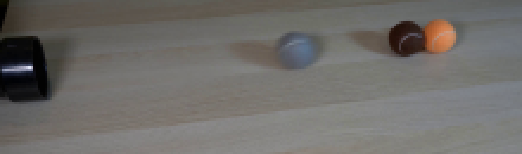
视觉工具实际返回图片 3
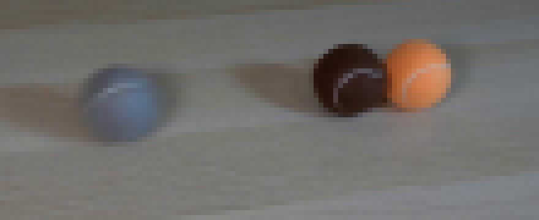
视觉工具实际返回图片 4
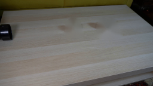
视觉工具实际返回图片 5
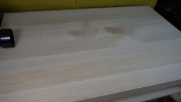
视觉工具实际返回图片 6
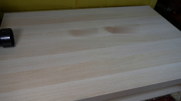
视觉工具实际返回图片 7
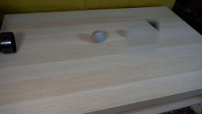
视觉工具实际返回图片 8
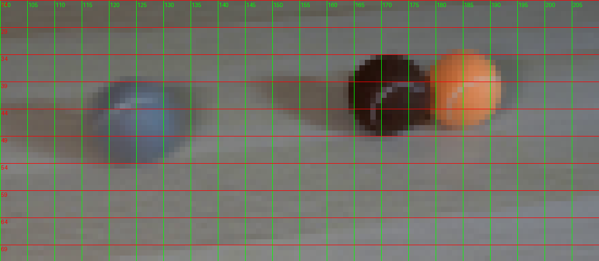
视觉工具实际返回图片 9
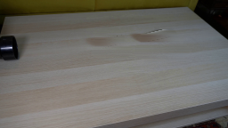
视觉工具实际返回图片 10
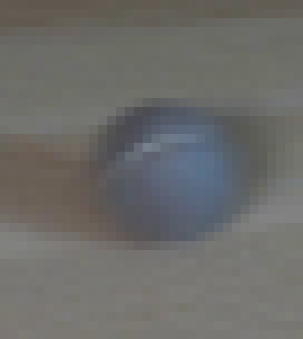
视觉工具实际返回图片 11
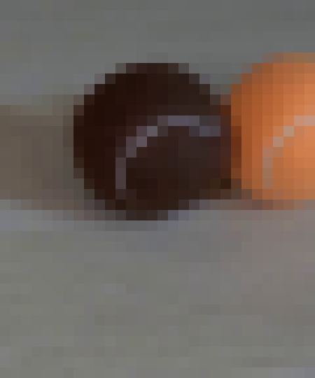
视觉工具实际返回图片 12
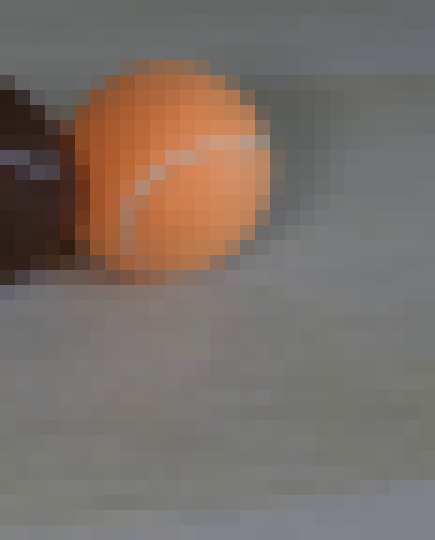
视觉工具实际返回图片 13
视觉工具实际返回图片 14
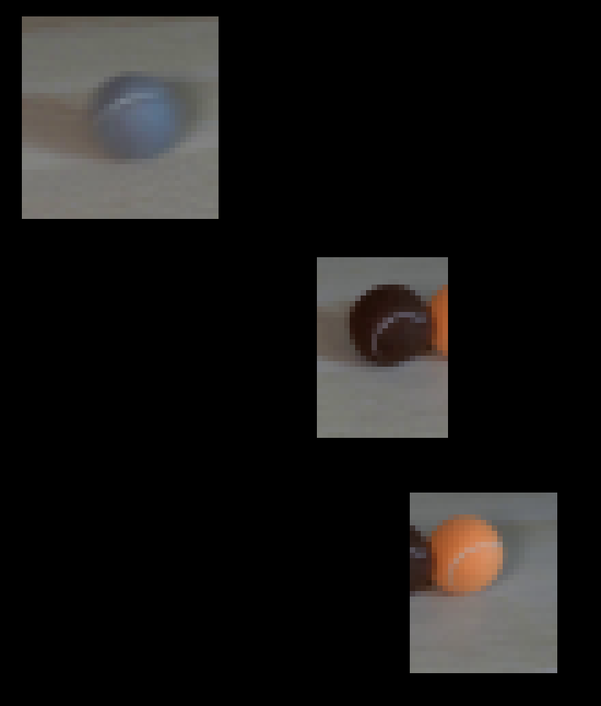
视觉工具实际返回图片 15
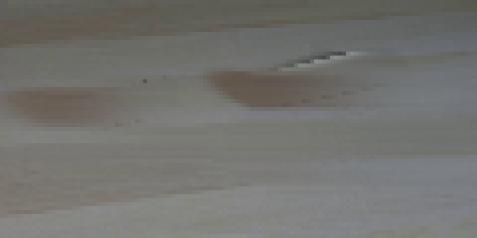
视觉工具实际返回图片 16
视觉工具实际返回图片 17
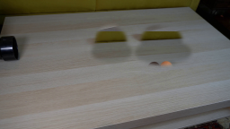
视觉工具实际返回图片 18
视觉工具实际返回图片 19
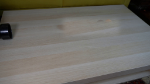
视觉工具实际返回图片 20
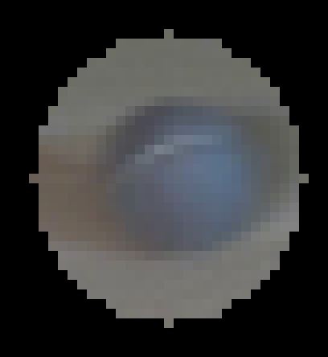
视觉工具实际返回图片 21
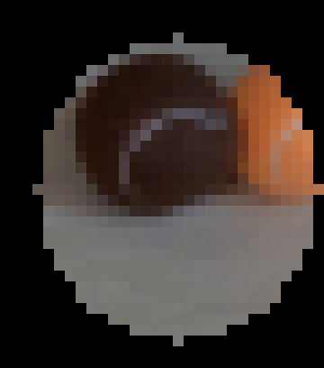
视觉工具实际返回图片 22
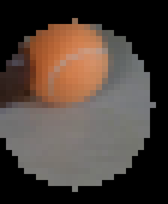
视觉工具实际返回图片 23
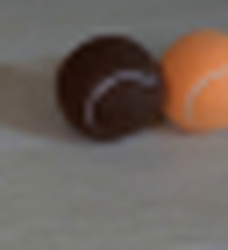
视觉工具实际返回图片 24
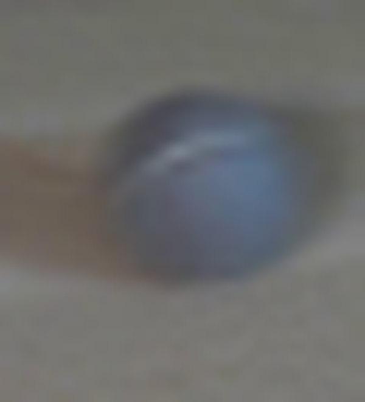
视觉工具实际返回图片 25
视觉工具实际返回图片 26
视觉工具实际返回图片 27
视觉工具实际返回图片 28
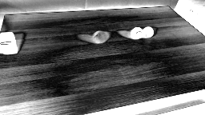
命令 42exit 0
/bin/bash -c 'ls -l .tmp | tail -30'
保存候选 0 份；完成命令 42 次；可验证图片返回 28 张。原始 API 响应与完整日志保留在本地。